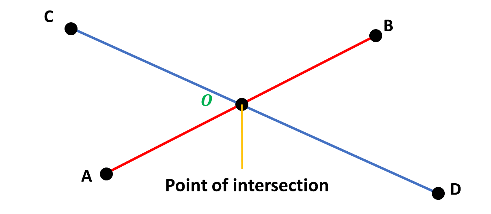
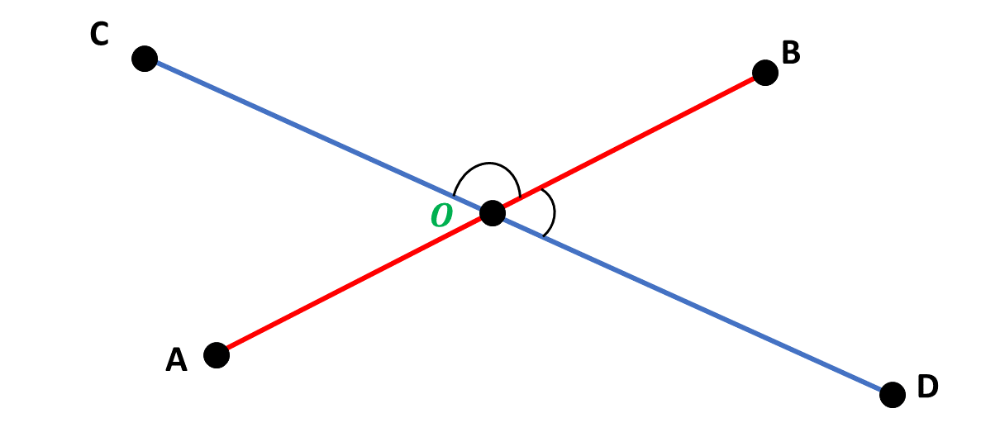
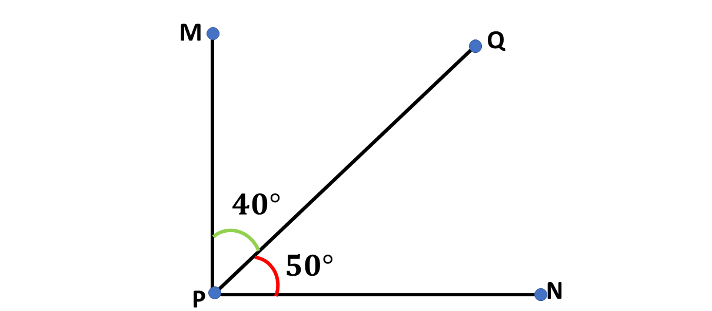
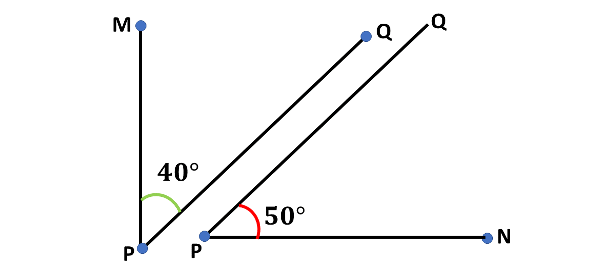
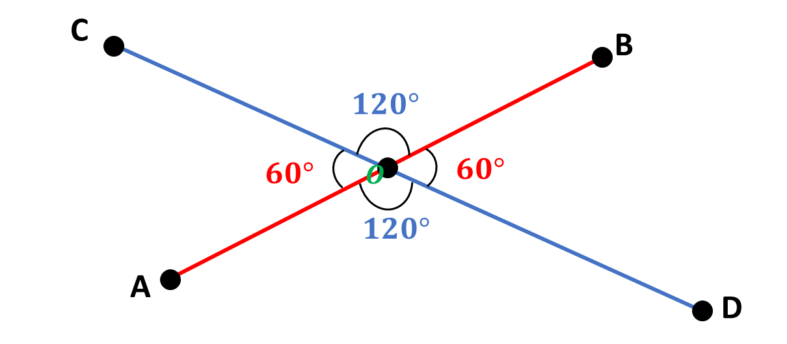
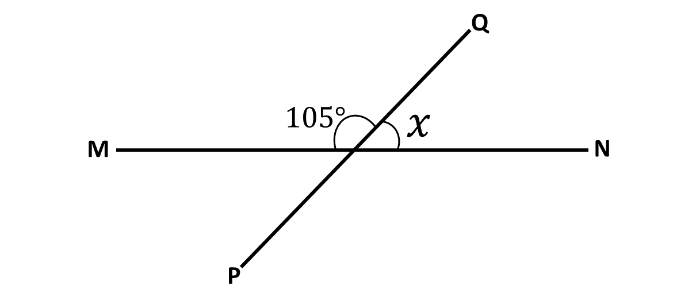
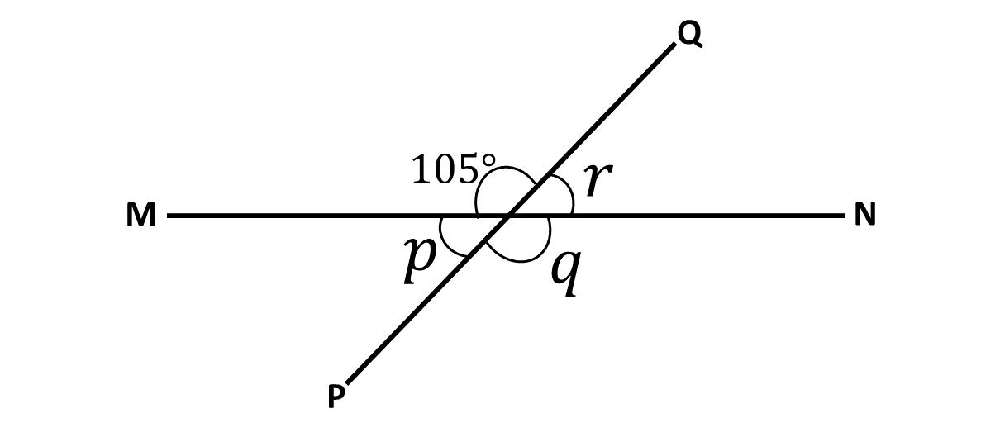
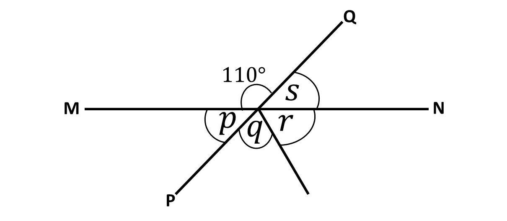

We will now look at angles that share the same vertex, and angles facing each other when two line segments intersect.
Remember, that when two or more line segments intersect, a point is created. We usually call this point a point of intersection.
Consider the diagram below:
A point of intersection can also be called a vertex. Hence, the point \(O\) in the diagram above, is also called a vertex.
In Mathematics, when two angles are formed such that they share the same vertex and they are also on the same side of a line, we say that, the angles are adjacent to each other.
Consider the diagram below:

In the diagram, \(\angle BOC\) is said to be adjacent to \(\angle BOD\) as they share the same vertex (point \(O\)), and formed on the same side of line segment \(CD\).
What other angles in the diagram above share the same vertex and are formed on the same side of a line?
Are all Supplementary Angles Adjacent?
Sometimes, two adjacent angles can combine to form a straight angle or angle \(180^\circ\), like in the diagram above, but that does not necessarily make all supplementary angles adjacent angles.
Supplementary angles do not need to share the same vertex, whereas adjacent angles by definition, must share the same vertex.
Also, not all adjacent angles make straight angles, or sum up to \(180^\circ\). Consider the diagram below, where two adjacent angles add up to \(90^\circ\):

Are all Complementary Angles Adjacent?
Similarly, even though the two angles above share the same vertex, hence adjacent to each other, and are complementary \((\angle MPQ + \angle NPQ = 90^\circ)\), not all complementary angles are adjacent angles.
This is because, by definition, complementary angles do not necessarily need to share the same vertex to be called complementary angles, as long as the sum of two angles is \(90^\circ\), they are complementary, whether they share the same vertex or not.
Example 1

Students in Good Shepherd International School basic 9 were asked to describe the two angles above, some of the students said the two angles are complementary angles, since the sum of the angles is \(90^\circ\). Others said that the angles are adjacent angles. Which of the students are right, and why?
Solution
The definition for adjacent angle states that for two angles to be considered adjacent, they must share the same vertex, and must be on the same side of a shared line.
Since the two angles above are not joined by the same line, they cannot be considered as adjacent angles, hence, they are only complementary, as their sum is \(90^\circ\).
Key Take Away
\(*\) Adjacent angles are angles that share the same vertex and are on the same side of any given line.
\(*\) Not all complementary angles are adjacent angles.
\(*\) Not all supplementary angles are adjacent angles.
Vertically opposite angles are pairs of non-adjacent angles formed when two lines intersect.
When these two lines intersect, four (4) angles are formed at the point of intersection, such that we have two pairs of non-adjacent angles. It is these pairs of non-adjacent angles that we call vertically opposite angles.
Consider the diagram below:

From the diagram, it can be seen that the two pairs of non-adjacent angles are:
\(*\) \(\angle COB\) and \(\angle AOD = 120^\circ\);
\(*\) \(\angle COA\) and \(\angle BOD = 60^\circ\).
This means that \(\angle COB\) and \(\angle AOD\) are vertically opposite angles, also, \(\angle COA\) and \(\angle BOD\) are vertically opposite.
We can deduce therefore that vertically opposite angles are always equal.
Example 2
In the diagram below, \(MN\) and \(PQ\) are straight lines. Find the value of the angle marked \(x\) in the figure.
Solution
Angle \(105^\circ\) and angle \(x^\circ\) are angles on a straight line.
\(\Rightarrow\) \(105^\circ + x^\circ = 180^\circ\)
\(\Rightarrow \hspace{1cm}\) \(x^\circ = 180^\circ - 105^\circ\)
\(\Rightarrow \hspace{1cm}\) \(x^\circ = 75^\circ\)
\(\therefore \) the angle marked \(x\) is \(75^\circ\).
Watch the video below for a walk-through of the solution.
Please subscribe to help our channel grow.
Example 3
Find the value of the letters in the figure below:
Solution
From the diagram angle \(p\) and angle \(105^\circ\) are on the same line.
\(\Rightarrow\) \(p + 105^\circ = 180^\circ\)
\(\Rightarrow \hspace{1cm}\) \(p = 180^\circ - 105^\circ\)
\(\Rightarrow \hspace{1cm}\) \(p = 75^\circ\)
\(\therefore \) the angle marked \(p\) is \(75^\circ\).
From the diagram angle \(q\) and angle \(105^\circ\) are vertically opposite angles.
Vertically opposite angles are equal.
\(\Rightarrow\) \(q = 105^\circ\)
\(\therefore \) the angle marked \(q\) is \(105^\circ\).
From the diagram angle \(p\) and angle \(r\) are vertically opposite angles.
\(\Rightarrow\) \(r = p\)
\(\Rightarrow\) \(r = 75^\circ\)
\(\therefore \) the angle marked \(r\) is \(75^\circ\).
Watch the video below for a walk-through of the solution.
Please subscribe to help our channel grow.
Try Test
In the diagram, \(MN\) and \(PQ\) are straight lines. If angle \(q\) and angle \(r\) are equal, find the values of the angles marked with letters below;
1. \(p\)
2. \(q\)
3. \(r\)
4. \(s\)
Answers
1. \(p = 70^\circ\)
2. \(q = 65^\circ\)
3. \(r = 65^\circ\)
4. \(s = 70^\circ\)
Test yourself on what you have learnt so far. Click on the link below when you are ready.
Kindly contact the administrator on 0208711375 for the link to the test.
To advertise on our website kindly call on 0208711375 or 0249969740.